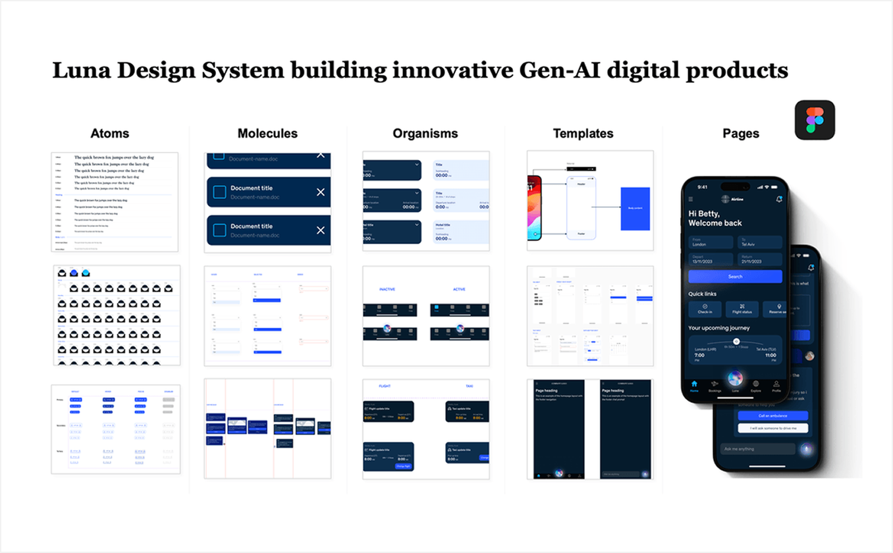

AI-Powered Customer Experience Platform
Designing Scalable Agent-Based Systems for Enterprise Workflows
Enterprise organizations needed a scalable, white-label conversational AI assistant that could adapt across industries, markets, and regulatory environments—without requiring redesign for each implementation. The core constraint: build one system that flexes across consumer goods, retail, services, and beyond.
Role Lead Product Designer
Client type Retail & Consumer Global Client base
High-level impact Used in 10+ global MVPs; 20–30% projected NPS uplift; 30–40% higher cross-sell value
Strategy
Rather than building custom solutions per client, we architected a modular platform where the conversational engine, reasoning framework, and UI system could be configured and extended without rework.
This meant designing for parameterization—allowing brand voice, content rules, and interaction patterns to vary while the underlying architecture remained consistent.
Meet, Luna.

Design Execution
01. Scalable, atomic design system
Built a multi-platform design system including component libraries, interaction rules, structured reasoning cards, pattern frameworks, and UI templates. Ensured cross-market consistency and fast reuse by internal product teams.
02. Conversational UX & rule definition
Designed flexible dialogue flows that could adapt to different brand voices, customer contexts, and business objectives. Built configurable reasoning cards and content behavior rules so each implementation could reflect its industry and market without UI rework.
03. White-label platform architecture
Designed a modular interface that could flex across industries and maturity levels—from consumer goods to retail and services. The platform supports configurable inputs, variable brand assets, and adjustable reasoning styles, enabling rapid deployment across verticals.
04. Iterative prototyping & refinement
Built and tested multiple rounds of prototypes—validating user understanding, output quality, and workflow fit across different client scenarios. Each iteration sharpened the assistant's value proposition while ensuring compliance, trust, and operational feasibility.
05. Application across multiple client contexts
Partnered with engagement teams to adapt the assistant to different global markets and brand environments. Produced tailored flows, content behavior rules, and UI assets that demonstrated the system's versatility in real client scenarios—from automotive to financial services to hospitality.


Application within client context


OUTCOMES
Results
- 20–30% projected NPS uplift across all client implementations
- 30–40% higher cross-sell value enabled through smarter, journey-aligned content flows
- 60% reduction in implementation time for new client onboarding (vs. custom builds)
- 10+ global MVPs now live, using the platform as the reference system
- 3,000+ component variations (across languages, industries, and brand contexts)
- Multiple autonomous product teams able to configure and deploy independently
- C-suite visibility worldwide — platform adopted across leadership enablement and client demos

REFLECTION
What This Taught Me
- Designed AI-powered customer experiences across enterprise workflows
- Defined interaction patterns for agent-based systems and non-deterministic outputs
- Structured multi-agent workflows to improve reliability and scalability
- Bridged design, engineering, and AI capabilities to deliver production-ready systems